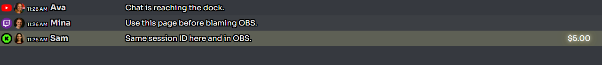
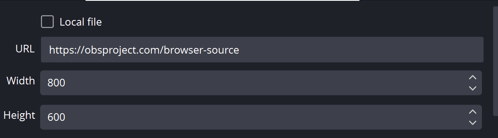
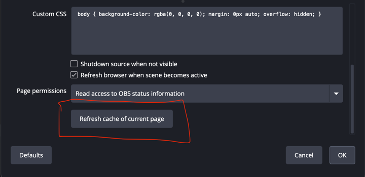
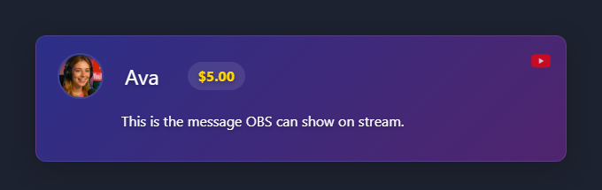
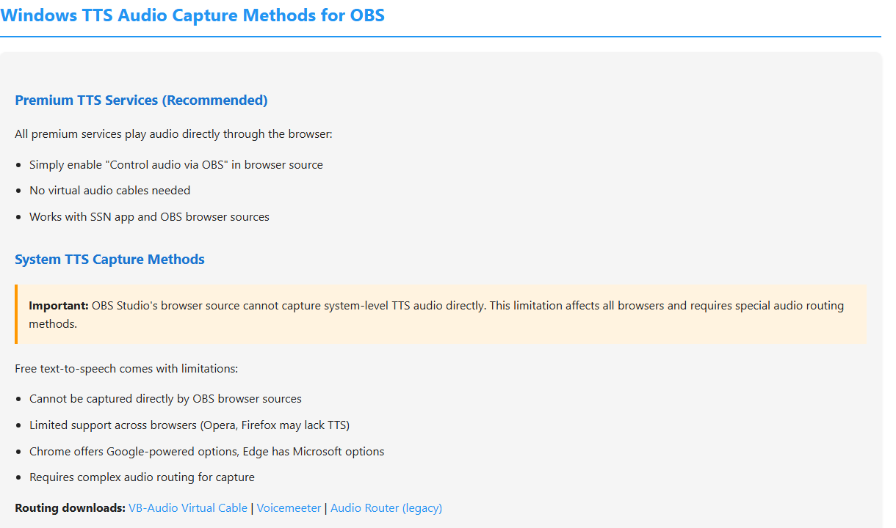

Alusta dokiga
Dokk on kiireim test. Kui dokk on tühi, ärge veel OBS-i siluge. Esmalt parandage platvormi allikas.

Asendage salvestatud OBS-i URL ja värskendage selle vahemälu
Tehke need selles järjekorras. Ainuüksi vahemälu värskendamine ei lisa vanale URL-ile muudetud seanssi, parooli ega serveri marsruutimise valikut.
- Kopeerige rakenduses Social Stream Ninja värskelt loodud link täpselt kasutatava doki või ülekatte jaoks. Kopeerige kogu link selle parameetrite käsitsi muutmise asemel.
- Leidke OBS-is Social Streami allikas jaotisest Allikad, paremklõpsake seda ja valige Omadused.
- Veenduge Kohalik fail pole valitud. Märkige kogu sisu väljal URL, seejärel kleepige uus link vana peale.

- Kerige atribuutide akna lõppu ja klõpsake Värskenda praeguse lehe vahemälu.
- Klõpsake OK, seejärel saatke Social Stream Ninjast üks näidistestsõnum.

Kui vana sisu on endiselt alles: sulgege atribuutide aken, avage see uuesti ja korrake katset. Viimase abinõuna eemaldage brauseriallikas ja looge see värske lingiga uuesti.
Ava dokilink uuesti
Sulgege vana doki leht või aken, seejärel klõpsake äsja loodud Dokk link teenuses Social Stream Ninja. Kui see on salvestatud OBS-i kohandatud brauseri dokina, avage Dokid → Kohandatud brauseri dokid, asendage selle URL, rakendage muudatus ja avage dokk uuesti.
Otsuste puu
| Test | Tähendus | Järgmine samm |
|---|---|---|
| Dokk on tühi | Allika/platvormi jäädvustamine ei tööta veel. | Kontrollige sisselogimist, reaalajas lehte, hüpikakent/allikalehte, rakenduse režiimi või platvormi juhendit. |
| Dokk töötab, brauseri ülekate töötab | Tõenäoline probleem on OBS-i brauseriallikas. | Värskendage OBS-i allikat, kontrollige URL-i, mõõtmeid, nähtavust, vahemälu ja kohandatud CSS-i. |
| Dokk töötab, brauseri ülekate on tühi | Vale ülekatteleht, vale seanss või puuduv sobiv andmepakett. | Kasutage sama seanssi ja valige leht, mis vastab eeldatavale väljundile. |
| Pilt töötab, TTS vaikib | Heli marsruutimise probleem. | Kontrollige teenusepakkuja või süsteemi TTS-i kasutamist ja OBS-i heli jäädvustamist. |
Kontrollige ülekatte URL-i
Kasutage kõikjal täpselt sama seansi ID-d. Ühe tähemärgi erinevus loob eraldi ruumi.
https://socialstream.ninja/dock.html?session=YOUR_SESSION
https://socialstream.ninja/featured.html?session=YOUR_SESSION

Kui TTS on OBS-is vaikne
Levinud komistuskivi on süsteemi TTS. See võib kõlada teie kõlarites, kuid OBS-i brauseriallikas ei saa heli kätte.

Üksikasjalik abi: TTS-i häälestusjuhend.
Levinud parandused
- Asendage salvestatud URL, seejärel värskendage brauseriallika vahemälu.
- Tehke allikas nähtavaks ja kontrollige, et laius/kõrgus ei oleks väike.
- Peidetud teksti või läbipaistvuse probleemi välistamiseks eemaldage ajutiselt kohandatud OBS-i CSS.
- Avage tavalises brauseris sama OBS-i URL, et eraldada OBS-i probleemid Social Stream Ninja probleemidest.
Kui kasutajatugi on kinnitanud Windowsi õiguste erinevuse, järgige juhendit Käivitage OBS ja Social Stream administraatorina. Administraatorirežiim ei ole tavaline parandus tühja doki jaoks.
Kas olete endiselt ummikus? Toe saamiseks eksportige oma Social Stream Ninja seaded ja OBS-stseenikogu.